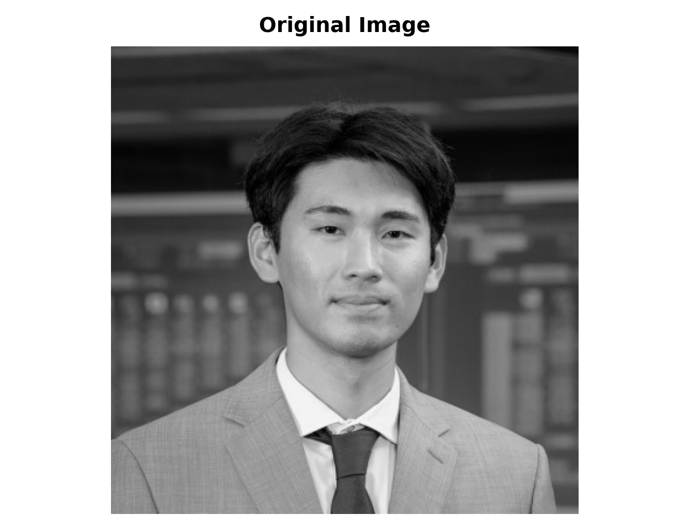
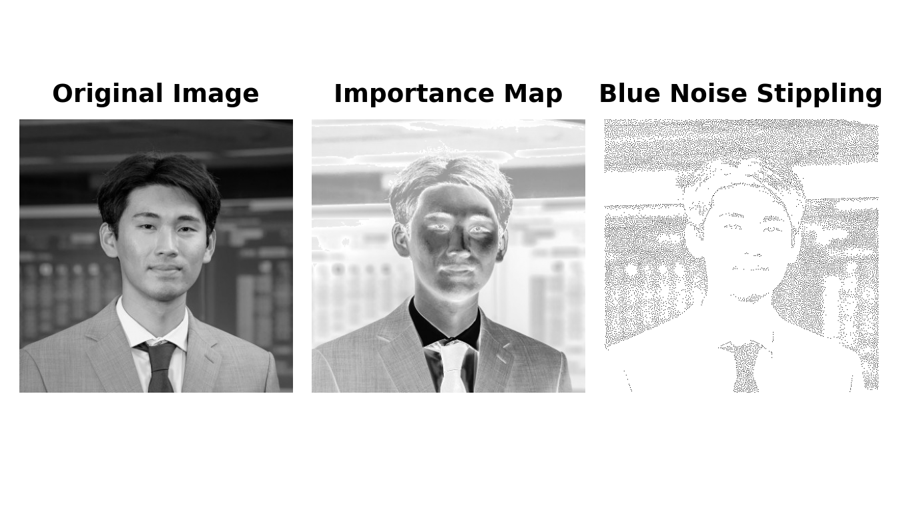
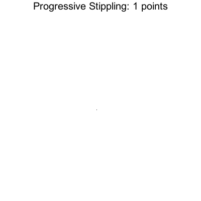
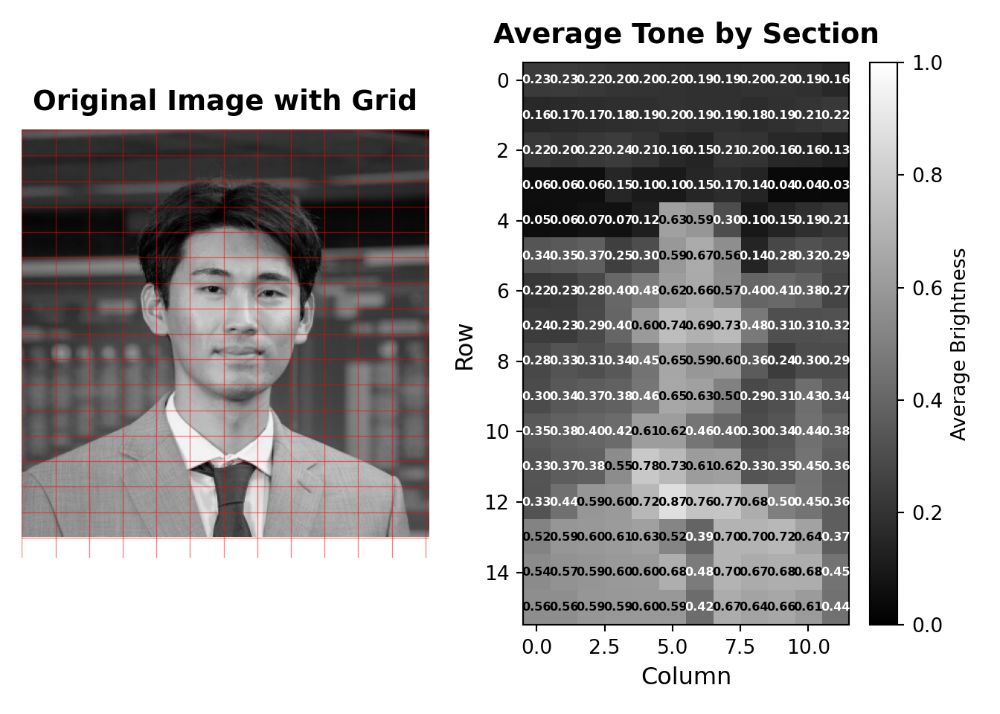
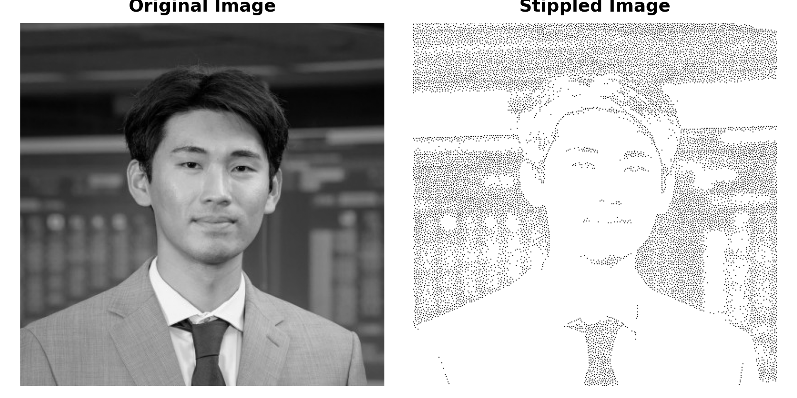

Image shape: (400, 400)
Image size: 400x400 pixelsSelection Bias & Missing Data Challenge - Part 1
Blue Noise Stippling: Creating Art from Data
🎨 Selection Bias & Missing Data Challenge - Part 1
Introduction to Blue Noise Stippling
Blue noise stippling is a technique for converting images into a pattern of dots (stipples) that preserves the visual information of the original image while creating an aesthetically pleasing, evenly distributed pattern. This method follows the approach described by Bart Wronski.
The method uses a modified “void and cluster” algorithm that combines importance sampling with blue noise distribution properties to create stippling patterns that are both visually accurate and spatially well-distributed. This version uses smooth extreme downweighting that selectively downweights very dark and very light tones while preserving mid-tones, creating a more balanced distribution of stipples across the image.
Loading the Original Image
First, let’s load an image that we’ll convert to a blue noise stippling pattern. You can use any image you’d like, but we’ll demonstrate with the provided example.

Importance Mapping
Before applying the stippling algorithm, we create an importance map that identifies which regions of the image should receive more stipples. The importance map is computed by:
- Brightness inversion: The image brightness is inverted so that dark areas receive higher importance and thus more dots, while light areas receive fewer dots
- Extreme tone downweighting: Smooth Gaussian functions downweight tones below 0.2 (very dark) and above 0.8 (very light), creating a gradual transition that preserves mid-tones
- Mid-tone boost: A smooth Gaussian function centered on mid-tones provides a gradual increase in importance for mid-tone regions, ensuring they receive appropriate stippling density
- Selective and effective: This approach ensures that stipples are distributed appropriately (more dots in dark areas and mid-tones, fewer in extreme dark/light areas) while maintaining good spatial distribution
Important🎯 Key Tuning Point:
compute_importance Function
This function is all you need to control dot distribution! The compute_importance function is the primary mechanism for tuning where more or fewer dots appear in your stippled image. By adjusting its parameters, you can:
- Control which tones get more dots: Adjust
extreme_threshold_lowandextreme_threshold_highto define what counts as “extreme” tones - Reduce dots in extreme regions: Increase
extreme_downweight(0.0-1.0) to reduce stipples in very dark or very light areas - Boost specific tone ranges: Adjust
mid_tone_boostandmid_tone_centerto emphasize particular brightness ranges (e.g., skin tones around 0.7) - Control transition smoothness: Modify
extreme_sigmaandmid_tone_sigmato make transitions sharper or more gradual
No need to modify the stippling algorithm itself—all the tuning happens in this function. Experiment with different parameter values to achieve your desired dot distribution!
Blue Noise Stippling Algorithm
The stippling algorithm uses a modified void-and-cluster approach that:
- Creates an importance map that identifies visually important regions
- Initializes an energy field based on the importance map (higher importance → lower energy)
- Uses a toroidal (periodic) Gaussian kernel for repulsion to ensure blue noise properties
- Iteratively selects points with minimum energy
- Adds Gaussian “splats” around selected points to prevent clustering
- Balances image content importance with blue noise spatial distribution
Preparing the Working Image
Before generating the stippling pattern, we prepare the image by resizing if necessary and computing the importance map.
Final image shape: (400, 400) (should be 2D for grayscale)
Importance map computedGenerating the Stippled Image
Now let’s apply the stippling algorithm to create the blue noise stippling pattern.
Generating blue noise stippling pattern...
Generated 12800 stipple points
Stipple pattern shape: (400, 400)Displaying the Results
Let’s visualize the original image, the importance map, and the stippled version side by side for comparison.

Progressive Stippling Animation
This section creates a GIF showing how the stippled image looks as more points are added sequentially. We’ll use the already-computed stippling points to generate frames at increments of 100 points.
Using existing stippling with 12800 points
Image shape: (400, 400)
Generated 129 frames
Point counts: [1, 100, 200, 300, 400, 500, 600, 700, 800, 900, 1000, 1100, 1200, 1300, 1400, 1500, 1600, 1700, 1800, 1900, 2000, 2100, 2200, 2300, 2400, 2500, 2600, 2700, 2800, 2900, 3000, 3100, 3200, 3300, 3400, 3500, 3600, 3700, 3800, 3900, 4000, 4100, 4200, 4300, 4400, 4500, 4600, 4700, 4800, 4900, 5000, 5100, 5200, 5300, 5400, 5500, 5600, 5700, 5800, 5900, 6000, 6100, 6200, 6300, 6400, 6500, 6600, 6700, 6800, 6900, 7000, 7100, 7200, 7300, 7400, 7500, 7600, 7700, 7800, 7900, 8000, 8100, 8200, 8300, 8400, 8500, 8600, 8700, 8800, 8900, 9000, 9100, 9200, 9300, 9400, 9500, 9600, 9700, 9800, 9900, 10000, 10100, 10200, 10300, 10400, 10500, 10600, 10700, 10800, 10900, 11000, 11100, 11200, 11300, 11400, 11500, 11600, 11700, 11800, 11900, 12000, 12100, 12200, 12300, 12400, 12500, 12600, 12700, 12800]Now let’s create the GIF animation:

Appendix: Average Tone by Section
To understand the distribution of tones across the image and identify the center of skin tone, we divide the image into a grid of small sections and compute the average brightness in each section.

Grid size: 16 rows × 12 columns
Section size: approximately 25 × 33 pixels
Average tone statistics:
Overall mean: 0.387
Overall std: 0.201
Min: 0.032
Max: 0.872
Sections with tone close to skin tone (0.7 ± 0.1):
Row 13, Col 7: 0.700
Row 14, Col 7: 0.699
Row 13, Col 8: 0.704
Row 7, Col 6: 0.692
Row 14, Col 9: 0.683
Row 14, Col 5: 0.682
Row 12, Col 4: 0.719
Row 13, Col 9: 0.720
Row 12, Col 8: 0.678
Row 14, Col 10: 0.677
Row 15, Col 7: 0.675
Row 11, Col 5: 0.726
Row 7, Col 7: 0.727
Row 14, Col 8: 0.670
Row 5, Col 6: 0.669
Row 6, Col 6: 0.664
Row 7, Col 5: 0.741
Row 15, Col 9: 0.656
Row 9, Col 5: 0.653
Row 8, Col 5: 0.650
Row 15, Col 8: 0.638
Row 12, Col 6: 0.763
Row 13, Col 10: 0.636
Row 12, Col 7: 0.772
Row 9, Col 6: 0.627
Row 13, Col 4: 0.626
Row 4, Col 5: 0.625
Row 11, Col 7: 0.625
Row 11, Col 4: 0.782
Row 6, Col 5: 0.617
Row 10, Col 5: 0.615
Row 10, Col 4: 0.614
Row 11, Col 6: 0.610
Row 15, Col 10: 0.608
Row 13, Col 3: 0.608
Row 12, Col 3: 0.604
Row 14, Col 4: 0.604
Row 8, Col 7: 0.603
Row 7, Col 4: 0.603
Row 15, Col 4: 0.601
Full grid of average tones (row, col):
Col 0 Col 1 Col 2 Col 3 Col 4 Col 5 Col 6 Col 7 Col 8 Col 9 Col10 Col11
Row 0 0.229 0.231 0.221 0.204 0.202 0.197 0.192 0.194 0.196 0.199 0.193 0.157
Row 1 0.162 0.166 0.172 0.181 0.186 0.197 0.193 0.193 0.179 0.190 0.211 0.223
Row 2 0.223 0.200 0.221 0.242 0.209 0.162 0.146 0.211 0.201 0.164 0.156 0.129
Row 3 0.058 0.056 0.057 0.152 0.103 0.100 0.149 0.173 0.144 0.035 0.036 0.032
Row 4 0.052 0.059 0.073 0.070 0.122 0.625 0.588 0.304 0.097 0.146 0.185 0.212
Row 5 0.335 0.352 0.373 0.249 0.302 0.595 0.669 0.556 0.143 0.279 0.321 0.291
Row 6 0.218 0.228 0.284 0.405 0.483 0.617 0.664 0.565 0.396 0.411 0.377 0.271
Row 7 0.240 0.231 0.290 0.397 0.603 0.741 0.692 0.727 0.475 0.311 0.312 0.319
Row 8 0.285 0.331 0.312 0.344 0.453 0.650 0.591 0.603 0.357 0.240 0.300 0.295
Row 9 0.295 0.345 0.367 0.384 0.464 0.653 0.627 0.504 0.286 0.314 0.433 0.342
Row10 0.352 0.382 0.397 0.420 0.614 0.615 0.458 0.403 0.300 0.336 0.440 0.383
Row11 0.331 0.366 0.378 0.549 0.782 0.726 0.610 0.625 0.329 0.348 0.450 0.362
Row12 0.327 0.439 0.586 0.604 0.719 0.872 0.763 0.772 0.678 0.499 0.455 0.365
Row13 0.517 0.587 0.596 0.608 0.626 0.523 0.394 0.700 0.704 0.720 0.636 0.369
Row14 0.543 0.573 0.585 0.599 0.604 0.682 0.482 0.699 0.670 0.683 0.677 0.451
Row15 0.557 0.558 0.587 0.595 0.601 0.595 0.424 0.675 0.638 0.656 0.608 0.445 Challenge Requirements 📋
